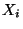
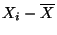

The mean or average is a measure of central tendency for a continuous data set. This
measure can either be computed for a population or for a sample. The sample mean is denoted
 while a population mean is denoted
while a population mean is denoted  . For a given set of data
. For a given set of data
 should be considered as an estimate for the corresponding
should be considered as an estimate for the corresponding  .
.
For a given data set
The mean conveys a great deal of information. First of all it is a central value. This signifies that the mean will be located towards the center of the data. As will be seen shortly the mean balances the total value above it and below it. Secondly it is a clustering value. This indicates that the measurements tend to cluster about the average. The actual extent of this clustering can be measured in terms of measures of variation. In line with this idea of clustering we would say that the mean is an expected value. That is, if a value is picked randomly from a set of data we would expect it to be close to the mean. This concept is used quite often in the way many everyday occurrences are viewed. For example if a basketball player averages 24 points per game then the value we would expect this player to score in his next game would be 24. Finally the mean has the mathematical significance that the deviations from the mean sum to zero. This is the technical way of describing that the mean balances the total value above and below it. A deviation of a measurement  from the mean is the difference . Thus a deviation is positive if the measurement is larger than the mean and negative if it is smaller than the mean. That the sum of these is always zero can be expressed as ;
EXAMPLE Suppose the sample data consisted of the five measurements 86,81,73,85,80 then the mean would be computed as